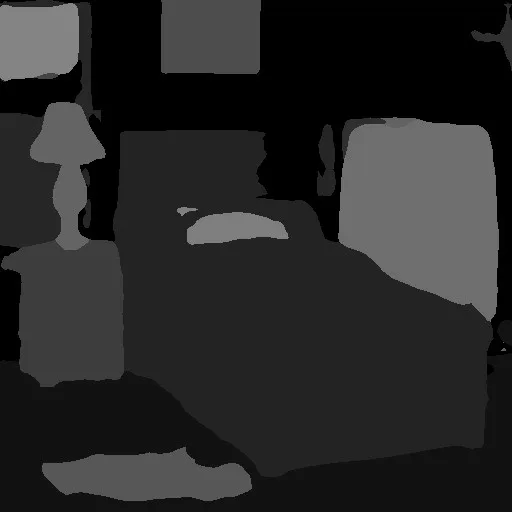

SEAOTTER：面向高效重建的传感器端自编码与一次性转码SEAOTTER: Sensor Embedded Autoencoding with One-Time Transcode for Efficient Reconstruction
不是 SLAM 后端，但直接影响多机器人/边缘-云重建的数据传输链路。
一句话工作总结
用 learned latent + JPEG 兼容转码降低机器人视觉数据上传和云端重建成本。
摘要
SEAOTTER 面向云端机器人视觉数据链路，在传感器端生成 learned latent，并通过一次性转码生成兼容 JPEG 基础设施的文件；可学习的 JPEG 颜色和量化变换用于减少压缩对密集感知和视觉语言任务的损伤。
In robotics systems, vast amounts of visual data are easily captured at high resolution using low-cost, low-power hardware. Yet, limited bandwidth and on-device compute resources prevent full utilization when transmitted via conventional codecs like JPEG/MPEG. Newer codecs, like AV1/AVIF, improve the rate-distortion trade-off, but demand far more resources for encoding, impractical without custom ASICs. Recent asymmetric autoencoders deliver high quality under extreme power and bandwidth constraints, but add prohibitive decoding cost and use bespoke formats that ignore decades of infrastructure built around standards like JPEG. To address these limitations, we introduce a compression framework for cloud robotics based on a Sensor Embedded Autoencoder paired with a One-Time Transcode for Efficient Reconstruction (SEAOTTER). Because the sensor, cloud, and consumer stages face very different power and bandwidth budgets, SEAOTTER combines the compactness of a learned latent with the broad usability of a standard JPEG file. Since naive transcoding degrades performance, we propose a learnable JPEG color and quantization transform that enables increased accuracy for global, dense, and vision-language-based perception. Using SEAOTTER, we train both general-purpose and task-aware transcoding pipelines for a pre-trained, frozen encoder. At a compression ratio of 200:1 and compared to AVIF, we observe 7 times faster encoding, 3.5 times faster decoding, and +8% ImageNet top-1 accuracy, while retaining compatibility with JPEG infrastructure. Our code is available at https://github.com/UT-SysML/seaotter .
中文解读摘录
- 日期：2026-06-03
- 链接：arXiv / PDF / Code
- 作者：Dan Jacobellis, Neeraja J. Yadwadkar
- 领域标签：机器人视觉 / 云端机器人 / 图像压缩 / 低带宽感知
- 背景/动机：机器人和低功耗传感器能采高分辨率视觉数据，但带宽、端侧算力和编码成本限制了云端重建/感知；AVIF 等新 codec 编码代价仍高。
- 主要创新点/工作：传感器端输出 learned latent，再通过 One-Time Transcode 变成兼容 JPEG 基础设施的文件；设计可学习 JPEG color/quantization transform，使压缩后仍服务 dense perception 和 VLM 感知。
- 为什么值得关注：不是 SLAM 后端算法，但很贴近多机器人/边缘-云地图构建的数据链路。200:1 压缩下报告编码比 AVIF 快 7 倍、解码快 3.5 倍，并提升 ImageNet top-1 8%，值得看其对特征匹配、深度估计和重建质量的影响。
图表/页面预览

{kind=link}
{kind=link}
{kind=link}
{kind=link}

{kind=link}